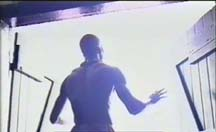
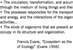

art | performance
≡
home
define
research
people
media | performance
economic survival rite of passage
Coded Messages: CHAINs
sound
teaching

 The Economic Survival Rite of Passage is a performance ecology—conceptualized, composed, written, and directed by Andruid Kerne—for 12 musicians, 4 actors, and 4 dancers.
The Economic Survival Rite of Passage is a performance ecology—conceptualized, composed, written, and directed by Andruid Kerne—for 12 musicians, 4 actors, and 4 dancers.

Coded Messages: CHAINS was a site-specific performance ecology created by master drummer Francis Kofi, Andruid Kerne, Mel Lang, and an ensemble of Ghanaian dancers and drummers for the Pan-African Theater Festival (PANAFEST) in 1994.
 Playas: Homeland Mirage
is an interactive installation situated in a faux living room, with overstuffed chair and game console.
The game, built with the Torque game engine, looks like a first-person shooter.
The player is left to ironicially figure out that, unlike the characters, they have no guns.
Playas: Homeland Mirage
is an interactive installation situated in a faux living room, with overstuffed chair and game console.
The game, built with the Torque game engine, looks like a first-person shooter.
The player is left to ironicially figure out that, unlike the characters, they have no guns.
Stenner, J., Kerne, A., Williams, Y.,
Playas: Homeland Mirage, Proc ACM Multimedia 2005, 1057-1058.
 Censor Chair is an interactive installation that ironically uses data from physiological sensors to trigger images and sounds evoking
experiences of fear of censorship.
Censor Chair is an interactive installation that ironically uses data from physiological sensors to trigger images and sounds evoking
experiences of fear of censorship.
Alley, E., Cooper, T., Graeber, R., Kerne, A., Overby, K., Toups Dugas, P. O.,
Censor Chair: Exploring Censorship and Social Presence through
Psychophysiological Sensing,
Proc ACM Multimedia 2005, 922-929 [16%].
Kerne, A., Wakkary, R., Nack, F., Steggell, A., Jaimes, A., Candan, K.S., Del Bimbo, A., Jennings, P., Dulic, A.
Connecting artists and scientists in multimedia research, Proc
ACM Multimedia 2008, 1113.
https://doi.org/10.1145/1459359.1459589
 Kerne, A.,
doing
interface ecology: the practice of metadisciplinarity, Proc
SIGGRAPH Art and Animation 2005, 181-185 [20%].
http://dx.doi.org/10.1145/1086057.1086144
Kerne, A.,
doing
interface ecology: the practice of metadisciplinarity, Proc
SIGGRAPH Art and Animation 2005, 181-185 [20%].
http://dx.doi.org/10.1145/1086057.1086144

Kerne, A.,
Interface Ecosystem, the Fundamental Unit of Information Age Ecology.
Proc SIGGRAPH 2002: Art and Animation, 142-145 [19%].
http://dx.doi.org/10.1145/2931127.2931200
Jeremijenko, N., Schiphorst, T., Matteas, M., Strauss, W., Wright, W., Kerne, A.,
Extending interface practice: an ecosystem approach.
Proc SIGGRAPH 2002: Abstracts & Applications, 90-91 [19%].
http://dx.doi.org/10.1145/1242073.1242122
 Additional sound work
variously composed, field recorded, and post-produced by Andruid Kerne.
Additional sound work
variously composed, field recorded, and post-produced by Andruid Kerne.
© Copyright by Andruid Kerne.